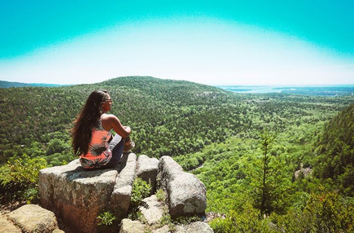
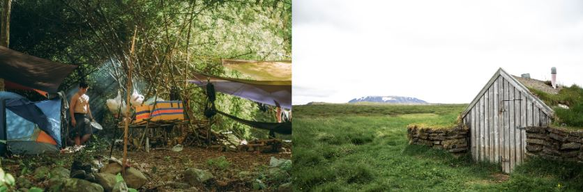
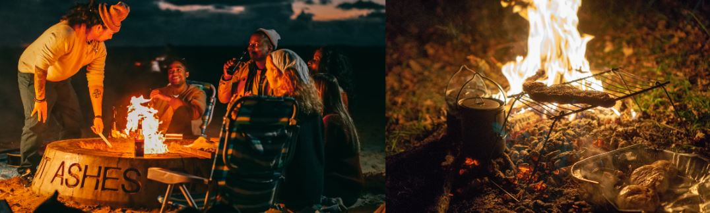

Living in the great outdoors: Ultimate Guide
Have you ever thought about living outdoor? Here i will go over all you need to know before you make that big decision. Living outdoors can be fun if you do it right. Living outdoors is when you use no shelter from the elements at all, for example a tent or a cabin. To live outdoors you will need these four things:
Off-grid living - What is it and what it isn't
Living "off-grid" is not about completely separating yourself from the modern world. Living off-grid simply means living independently and in a self-sufficient manner.
We will need to have a roof and walls with good insulation, we must protect ourselves from winter weather (wind, rain), we'll need a water system flowing directly into our home that can carry away wastewater back to the ground safely. We must also provide food and sunlight for ourselves year round; these necessities are much easier than you may think.
Nature is there waiting for you to experience
Of course there are those who have completely separated themselves from modern society, but if you are looking to live off-grid this isn't for you. Living in solitude is not the primary goal of most people in this lifestyle. Living off-grid allows us to enjoy nature and simple living at its very best, while still being connected with our community and to be able to access a variety of services. Living outdoors also gives us an endless amount of options when it comes to structures or shelters that could serve as homes for us. Living outdoors doesn't mean living without comfort at all - It can be done quite well!
You get your peace of mind back
One thing that's really important to me personally is my sense of safety and my peace of mind. Camping out in nature gives me a peace of mind like nothing else and it can do the same for you. You have to however think about all the things you will be leaving behind before you take the leap towards living fully outdoors.
The nice amenities that a regular house offers will not be easily or cheaply obtained when living outdoors. Living outdoors does not mean being exposed to the elements. Living outdoors can be done in several ways, each of them much more affordable than you would expect if you go about it the right way. Living outdoors is all about having your peace of mind and setting up everything in an arrangement that makes you feel comfortable so that any worries can be cast aside and forgotten for some time!
Shelter is very important
Shelter is a very important factor to living outdoors. Depending on where you live your choice of shelter will change. As a starter, ask yourself what the weather is like in your area and if it rains often, find out when the rainy season begins.
If you are going to be outdoors for long periods of time then having an outdoors shelter should be on your list of things to have. These can range from tents to outdoor sheds made from wood or even metal. You could also build your own outdoors house but that would take some time depending on how big you want it to be and whether or not you have building skills.
What will be your food source?
There are plenty of outdoors living options that can provide you with a major portion of your nutritional needs, if not all of them if you do it right! You can raise farm animals or hunt for wild game to get the food supplies that you need on a regular basis.
How will you get rid of waste?
Getting rid of waste is a major concern outdoors since you can't just pop over to the bathroom like they do in homes or apartments. You have to think about your waste and take measures to get rid of said waste.
There's also the option of using items such as portable toilets. Portable toilets can make life very easy, especially if you're close to a dump station.
Here is a list of ways to get rid of your waste- Portable Toilet
- Rv Black Water Tank
- Bins
- Trash Bags
- Rv Grey Water Tank
How will you get clean outdoors | Water Problems?
This is another major issue outdoors. It's not something people usually consider when they imagine themselves living outdoors but it needs to be done. The good news is that there are a variety of ways that you can go about doing this, so if one approach does not work for you then don't worry, there's always another option available. Some options include taking a dip in a nearby stream, taking a sponge bath outdoors or washing up using natural elements such as snow or river water.
If I'm going off-grid then what sort of technology will I need?
You will need some sort of way to power any electronics you might want to use. Many people like the idea of being off-grid but don't think it's possible because they have televisions, radios and other electrical items. There are a number of ways you can go about powering your devices outdoors without using mains electricity though. Solar panels can be used to recharge batteries for example. If you want to watch a television outdoors then you could also buy yourself a portable TV that works off batteries only. They're perfect if you want to go outdoors or even on holidays.
Here is a list of items you can use to power your devices:- Generator
- Solar Panels
- Dynamo
- Rechargeable Batteries
- Powerbanks
- Wind Up Battery Chargers
What about transportation?
When you decide to live off-grid, you will need some way to get around. If you decide to take public transportation then be sure that it is available when you need it and see if the areas around your location are walking distance away. If you too far away from the main roads, it might be hard for you to walk to a bus stop.
If you have a vehicle then make sure that it is in good condition and has enough gas to get you where you need to go. You can keep an extra bottle of gas with you at base camp at all times and pour it in your tank before leaving.
Conclusion
There are a number of reasons to want to live outdoors. For one, it is free! You can save money by not paying rent or utilities like electricity, gas and water. Plus, being outside allows you the opportunity to spend time in nature which is good for your mental health. It also forces people into healthier habits because they're more active when they are out in nature. And if that wasn't enough reason on its own, there are many ways to make an outdoor home comfortable with tents and sleeping bags.